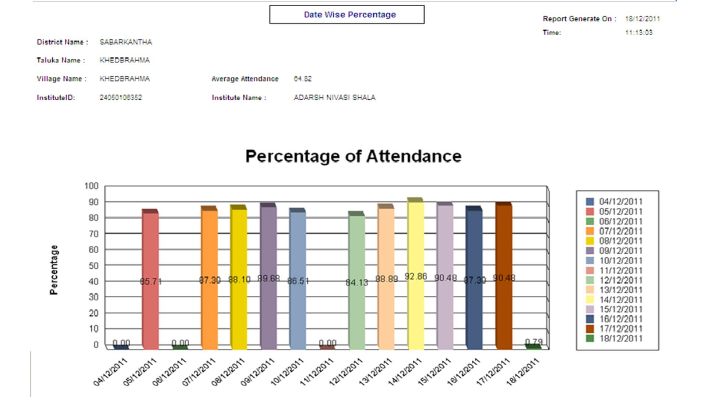
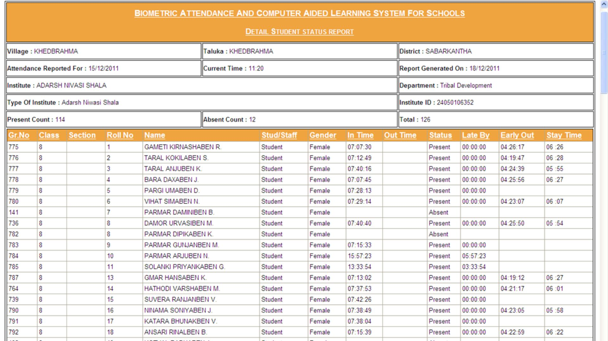
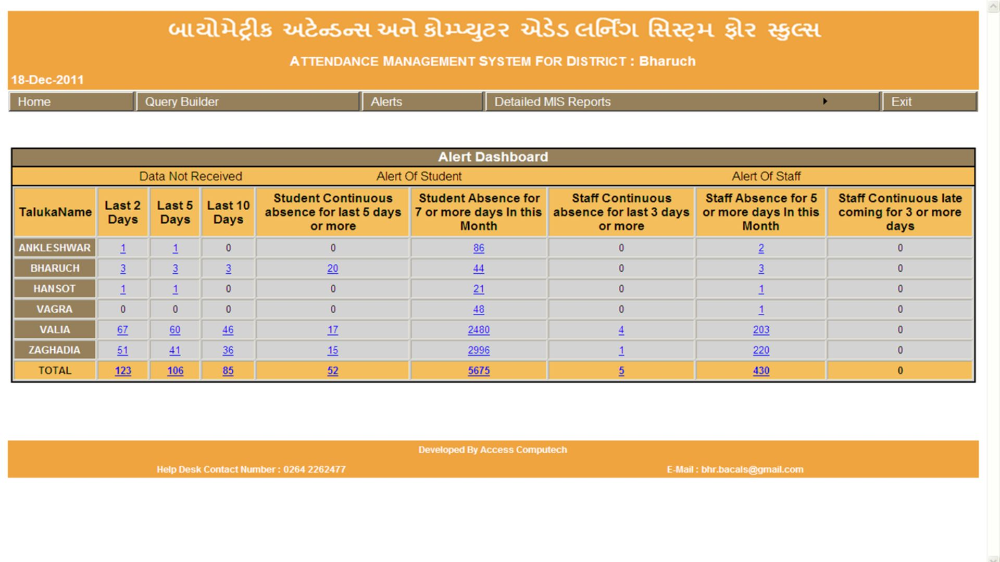
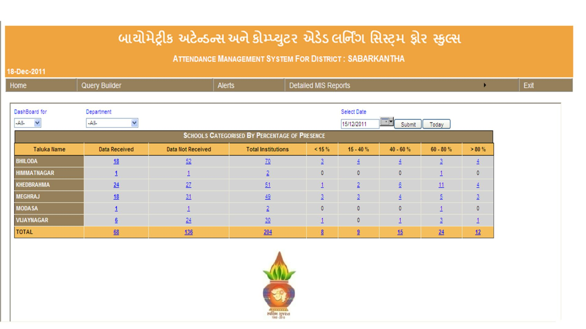
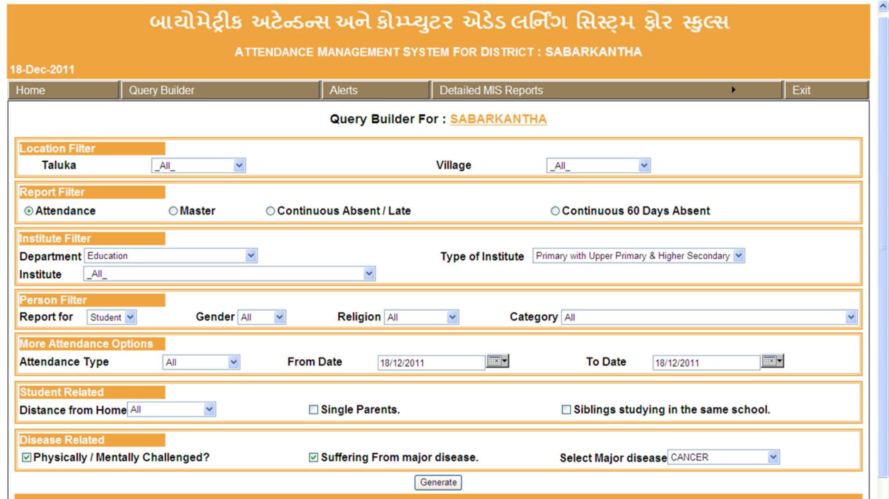

A Quick Background
Managing school attendance for students and staff across a whole state is time-consuming, to say the least. Anything of this scale will understandably be a humongous challenge for the state’s resources and will occupy a lot of time.
The Government of Gujarat wanted an automated solution which could record attendance, log it in real-time, and generate insightful reports from all that data. This data can help the state improve their efforts to better the quality of education provided and also recognise any areas where development was required.
Our team recently wrapped up this state-wide project with the Government of Gujarat to automate attendance tracking with the help of our biometric devices and create a state-wide solution.
With thousands of schools and lakhs of students involved, tracking who showed up was only one piece of the puzzle. What mattered just as much was knowing when something wasn’t right and knowing it soon enough to act on time.
In the earlier manual system, this could not happen. According to the earlier process, Schools would compile data at the end of the month, forward it to district offices, and by the time it reached state-level authorities, the moment to act had already passed.
This delayed decision-making, and more critically, important patterns like chronic absenteeism often went unnoticed until the problem escalated.
There was a need for a system that made all the collected data usable and actionable.
The Challenge
The problem wasn’t that data wasn’t being collected manually. It was. But it lived and died in silos, inside Excel files, paper logs, and local systems that didn’t talk to each other. A lot of data was collected, but many insights were lost in translation from one mode to another.
Teachers were spending hours compiling reports. Officers were depending on delayed summaries. And important issues like a student who hadn’t shown up in ten days, or a school that hadn’t uploaded attendance all week just slipped through the cracks. Not to mention any possibility of proxy attendance or instances of identity theft which could have taken place.
There was too much waiting. Too much paperwork. Too many things falling between the lines. We had to fix that.
The scale of Gujarat’s school network, however, demanded much more than a record-keeping tool. Officials required:
- Instant visibility into school performance
- Alerts when problems occurred
- Custom reports to answer specific questions
Manual reporting simply couldn’t scale to match these needs, especially not with the level of detail and timeliness expected.
How ACPL Solved It
So we started building dashboards for real-time awareness and to make early action a possibility. Our system stored attendance, monitored it, looked for patterns, and flagged anomalies. It generated alerts that told the right people what they needed to know, exactly when they needed to or even wanted to know it.
With the help of our system, state and district-level officials could instantly access and visually analyse summary reports over a fixed time period. For example, if someone at the District HQ wanted to view the last 15 days summary for a particular school within their district. We could display average attendance trends and daily attendance percentages, offering insights into weekly attendance patterns.

The system is also capable of providing a comprehensive record of individual student attendance history and cumulative student reports for particular schools simply based on the biometric data collected over time.

We also created multiple types of alerts, for example:
- If a student was absent for more than seven days in a row
- If a teacher hadn’t shown up in five
- If a school stopped syncing data for two, five, or ten days

And we didn’t stop at alerts. We built dashboards that gave district officers a bird’s eye view of every school in their zone. Officials could instantly see which schools had the lowest attendance that day, where issues were recurring, and which staff members needed a closer look.

We also gave them tools to ask their own questions. With a built-in query builder, officers could generate custom reports such as a compilation on specific classes, attendance ranges, schools, or timeframes. No tech support is required for generating reports. Just a few clicks, and the data made sense.

Impact & Results
Our system was designed in a way that real-time insights could be used to make a difference at the ground level. Going beyond the technical, we wanted to help the government make smarter decisions which affected the entire education system.
Officials no longer had to chase down reports, they opened their dashboard and saw what was happening.
Teachers no longer had to spend hours on summaries, the system took care of it.
And most importantly, problems no longer went unnoticed.
- If a child hadn’t been to school in over a week, someone knew.
- If a school hadn’t uploaded data in days, someone followed up.
- If patterns started to emerge such as declining attendance in certain pockets of the district, they were visible to responsible officials before they became national headlines.
This helped in better oversight, faster response, lighter workload, and smarter governance.
Our Takeaways
Working on this project we realised that data alone isn’t enough. By providing real-time visibility and custom reporting tools with visual representative support, ACPL helped the government move from a reactive model to a proactive one, making monitoring smarter, faster, and far more effective.
In most projects, reports come at the end. For us, they became a way to begin to ask better questions, to intervene earlier, to make decisions grounded in reality.
We turned a system that used to wait and react into one that could watch and respond. And sometimes, that’s what makes the biggest difference.
About Access Computech Pvt. Ltd.
At Access Computech, we’ve been delivering dependable, customised solutions for over 30 years, specialising in Point-of-Sale Machines and Personalised Identification Systems. From Attendance Recording and Access Control to Visitor Management, we create tailored systems that fit our clients’ unique needs.
Our tailored systems have enhanced efficiency across industries such as petrochemicals, refineries, steel, mining, power, electronics, and textiles.
With a passionate team and offices across the country, we stay ahead of the curve by adopting emerging technologies to deliver the latest, most reliable, high-quality solutions for our clients.
Our mission is simple: To consistently meet and exceed the expectations of our clients by adhering to the highest industry standards.
Our Certifications & Accreditations: Certified for excellence with ISO 9001, ISO 14000, ISO 27001, and CMM Level 3, we uphold industry-leading standards in every aspect of our business.